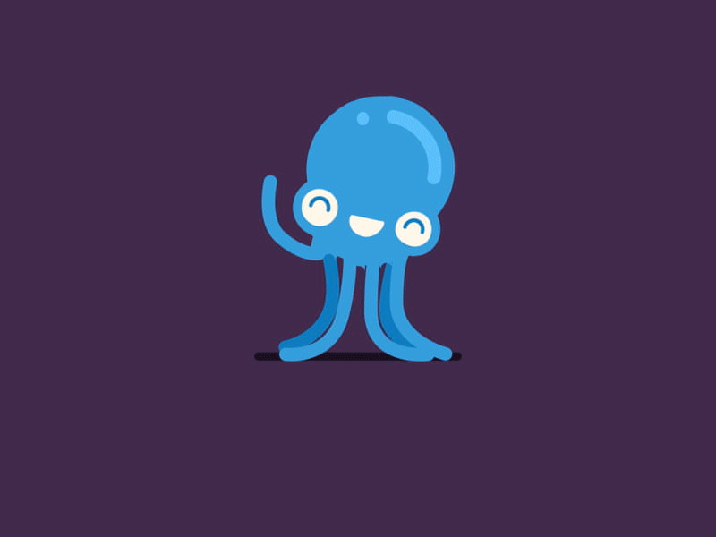

Осьмино́ги,илиспру́товые(лат.Octōpoda от др.-греч. ὀϰτώ «восемь» и πούς «нога»)—наиболее известные представители головоногих моллюсков.Типичные осьминоги, описание которых приведено в этой статье—представители подотряда Incirrina,придонные животные.Но некоторые представители этого подотряда и все виды второго подотряда,Cirrina—пелагические животные,битающие в толще воды,причём многие из них встречаются только на больших глубинах.Наука изучающая осьминогов и других головоногих моллюсков называется teuthology.
